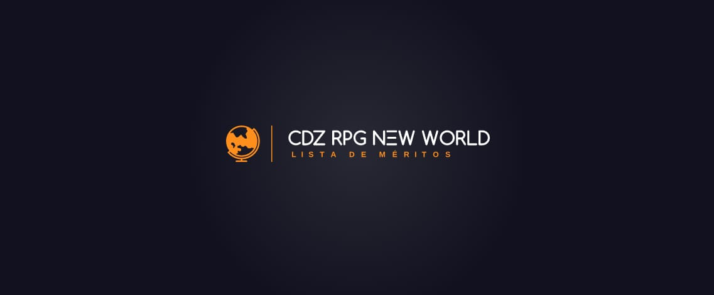

Aqui se enontram todos os sistemas, pequeno gafahoto, onde se pode ter acesso ao esquema do RPG. Se Divirta!
Sistemas Evolutivos
A evolução do personagem começa com um simples conto sobre a história dele, o Gaiden. O Gaiden pode conter o despertar do cosmo, lembro que para tal ato é necessário uma motivação forte. Pegue o exemplo de Seiya e do Tenma. O Gaiden confere ao player 500 pontos de Mérito, abrindo a sua jornada no mundo de NW - New World.Sistema de Mérito
A evolução do player irá se dar pelo sistema de merecimento ou como podemos chamar Mérito. Os méritos são pontos ganhos através de tarefas e o próprio esforço do player para subir de patente. As patentes do nosso RPG se baseiam na categoria das armaduras do santuário, ou seja, Ouro, Prata e Bronze, com todos os jogadores começando com uma armadura de Bronze. Os pontos de Mérito são acumulativos
Cada player deverá escolher um personagem na obra para ter a sua Ancestralidade, o que vai adquirir as suas técnicas. Para aqueles que sua Ancestralidade não apresentam Técnicas você terá o direito de construir 3 Técnicas sendo Bronze, em Prata você poderá construir mais uma técnica e em Ouro a mesma coisa, ficando com 5 Técnicas no Total.
Para aqueles que sua Ancestralidade apresenta técnicas eles o seguiram por toda a sua jornada, lembro que, se você começou como ex: Pegasus e escolheu o Seiya como seu Ancestral ele te seguirá até o final. As habilidades de Pegasus serão suas em Prata mais as técnicas de Prata e em Ouro a mesma coisa.
Vamos para o Sistema de Mérito:- CB - Cavaleiro de Bronze
- [CB-V] 1000 Méritos
- [CB-IV] 1.500 Méritos
- [CB-III] 2.000 Méritos
- [CB-II] 3.000 Méritos
- [CB-I] 3.000 Méritos
- CP - Cavaleiro de Prata
- [CP-V] 4.000 Méritos
- [CP-IV] 4.000 Méritos
- [CP-III] 4.000 Méritos
- [CP-II] 6.000 Méritos
- [CP-I] de 6.000 Méritos
- CO - Cavaleiro de Ouro
- [CO-V] 6.000 Méritos
- [CO-IV] 6.000
- [CO-III] 8.000 Méritos
- [CO-II] 9.000 Méritos
- [CO-I] 11.000 Méritos
- COE - Cavaleiro de Ouro Especial
- [COE-V] 6.000 Méritos
- [COE-IV] 6.000 Méritos
- [COE-III] 8.000
- [COE-II] 9.000 Méritos
- [COE-I] 11.000 Méritos
- Deus
- [D-III] 6.000 méritos
- [D-II] 12.000 Méritos
- [D-I] 20.000 Méritos
Para mais Informações sobre o Sistema de Mérito, entre aqui:
Sistema de Treino
Os treinos irão ter pontos padronizados de acordo com as patentes, Aspirante 50 pontos de Méritos; Bronze 150 pontos de Mérito; Prata 200 pontos de Méritos e Ouro 350 pontos de Méritos.Os treinos serão divididos nas seguintes categorias: Treinos Físicos; Treinos Cósmicos; Treinos Elementares; Treinos Mentais e Treinos de Técnicas.
Cada treino apresenta um foco específico, o treino físico tem como foco o esforço físico, treino de luta,corridas, qualquer tipo de coisa que envolva esforço físico, o treino cósmico é um tipo de treino mais maleável, é uma combina de força, poder e meditação, nesse tipo de treino você pode realizar narrativas onde o seu pp usa o cosmo para melhorar as qualidades físicas, como força, velocidade, resistência, auto conhecimento onde você realiza uma meditação em busca de conhecer mais o seu poder, já no treino mental é algo único onde você realiza uma narrativa voltada para uma exploração do subconsciente ou inconsciente é mais voltado para escrita de treinos em meditação, treinos elementais são treinos onde você realiza a manipulação do seu elemento dominante cada veste apresenta um tipo de elemento, sendo ele Água, Fogo, Luz, Terra, Trevas, Trovão e Vento, por fim o treino de técnica é o treino mais importante, é um tipo de treino que você irá realizar para poder ter controle sobre a sua técnica e poder utilizá-la de maneira completa e sem falhas, neste treino poderem treinar as habilidades de sua veste.
- Treino Individual:
- •➤ 30 linhas (passou disso pode ganhar pontos extras, mas irá depender do desenrolar do treino).
- •➤ Treinar somente 1 assunto e apenas esse durante tal treino, se treinar algum outro junto o ADM irá avaliar a cena e lhe entregar os pontos apenas para um deles.
- •➤ O ADM ou Mestre poderão reduzir pontos do treino caso tenha incoerências.
- •➤ Não fugir da realidade do seu nível, ser coerente na sua cena.
- •➤ 5 vezes na semana poderá fazer esse treino.
- •➤ Sem destruição de cenário, dentro de cidades ou casas afastadas. Seja coerente, vá para uma floresta ou um cenário afastado de tudo.
- •➤ Marcar o ADM ou Seu Mestre logo após o término do treino.
- Treino em Equipe
- •➤ 7 cenas de cada pessoa participando.
- •➤ 15 linhas por cena.
- •➤ Ser fiel ao seu nível, não exagerar e fazer algo que você nunca iria conseguir.
- •➤ Duas vezes na semana poderá ser feito esse treino.
- •➤ Não poderá matar seu parceiro de treino.
- •➤ Marcar o ADM ou Seu Mestre logo após o término do treino.
Missões Auto-Narradas
Poderão ser feitas até 5 vezes, durante a semana. E são classificadas nos seguintes níveis:
- • Nível fácil: 30 linhas no mínimo.
- Recompensa: 50 Mérito
- • Nível médio: 70 linhas no mínimo.
- Recompensa: 100 Mérito
- • Nível difícil: 100 linhas no mínimo.
- Recompensa: 150 Mérito
Combates
Missões/roteiros oficiais com risco de vidaSistemas Gerais
Seriam todos aqueles sistemas fora do campo quantitativo do RPG. Espero que gostem!Missões Narradas
Missões deste tipo irão ocorrer de forma semanal, onde poderá ir um número limitado de players.Podendo ter players de várias patentes ou somente de um em específico.
- • Mínimo de 3 players, máximo de 8. Isso dependerá do nível de cada missão.
- • Mortes, sim poderá ocorrer mortes em missões e perda de personagem caso acabe fazendo algo errado... Então, recomendamos não fazerem a missão de qualquer jeito
- • Cavaleiros de nível Ouro não vão em missões, eles participarão apenas de sagas. (Somente se for necessário)
- • Missões narradas são elaboradas pelos ADMs e mestres.
- • As missões poderão ser elaboradas pelos players previamente e mandadas para os ADMs.
- • As recompensas das missões tanto narradas recebem um critério diferente, elas são avaliadas individualmente.
Sentidos
- • Bronze possuem 100% do Sexto sentido e 50% do Sétimo sentido, com velocidade a Mach 5
- • Prata possuem 100% do Sexto e Sétimo sentido, com velocidade a Mach 10
- • Ouro possuem 100% do Sexto, Sétimo sentido e 50% do Oitavo sentido com exceção dos Virginianos e Espectros que possuem 100% do Oitavo sentido, com velocidade da Luz
- • Ouro Especial, Semi-Deuses e Kami seguem a lista de evolução.
é o sentido primordial do cosmo, e marca o ponto em que o indivíduo é capaz de sentir e/ou queimar seu cosmo, processo conhecido como o "despertar do cosmo". Com algum treino, ele pode permitir ao usuário sentir e medir cosmo-energias alheias, prever perigos (mal presságio ou perceber que alguém se aproxima) que o cerquem ou mesmo sentir fantasmas e almas (embora os únicos meios conhecidos de enxergá-las sejam o domínio do sekishiki e a perda do corpo físico).
7° Sentido:o milagre, que permite ao indivíduo dominar totalmente a essência do cosmo, sendo capaz de realizar milagres. É o cosmo final, pois é o cosmo dos cavaleiros de ouro para chegar ao nível máximo da hierarquia antes de deixarem de ser humanos. O poder neste sentido é capaz de superar a perda dos outros seis. Um cavaleiro alcança seu verdadeiro potencial quando seu universo interno, atingindo o sétimo sentido e superando todos os limites humanos, podendo até mesmo mover-se à velocidade da luz. Tal ato é conhecido como milagre.
8° Sentido:Arayashiki, que permite aos mortos movimentar-se no Meikai. Normalmente, ele só desperta depois da morte, quando todos os outros sentidos são eliminados, mas há exceções. Alguns seres, como as Sapuris e as Borboletas Infernais possuem a habilidade de sobreviver no mundo dos mortos, mas não podem ser considerados seres vivos. Ao morrer, a pessoa só terá o Arayashiki, e, diferente do sétimo sentido, ele não substitui a função mental dos outros, o que faz com que o indivíduo vire um zumbi sem consciência, e as únicas sensações restantes são a dor e o sofrimento.
Suprema Virtude | 9° Sentido:Este divino Cosmos é frequentemente referido como Big Will (A Grande Vontade). Os deuses possuem essa plena consciência do Cosmos, como eles seriam o próprio Cosmos. Poderes concedidos por esse conhecimento são absolutamente infinitos, mas somente Deuses superiores estão plenamente cônscios desse poder, enquanto os deuses menores, apesar de serem cem vezes mais fortes do que os guerreiros humanos mais fortes, estão longe do poder absoluto e ilimitado. Com este infinito Cosmos, não há nada impossível de alcançar para alterar profundamente as regras centrais da natureza e do universo. Os poderes reais deste Cosmos ainda não estão totalmente na série, mas estão tão além da compreensão humana que pode não ser fácil compreendê-lo completamente. Poseidon e Hadesusaram este Cosmos divino para capacitar Marinas e Espectros, já que eles eram pessoas normais originalmente.
Elementos
Os elementos são parte da Obra Ômega de Sant Seiya, os elementos são parte da natureza cósmica dos Cavaleiros de todos os reinos, os elementos são Agua, Terra, Vento, Trovão, Fogo, Luz e Trevas. Cada um dos elementos possui vantagens e desvantagens em comparação aos outros, embora o controle sobre o cosmo possa anular estas diferenças.Os players poderão começar a manipular o seu respectivo elemento a partir do Aspirante 3, o uso elemental é livre (exemplo de uso Avatar) porem vale lembrar que o uso exagerado será descontado nota em avaliações.
Assim como avaliamos a sorte de ação numa batalha com o dado D20 o uso elemental não escapa.
Elemento do Trovão:Garante ao usuário o poder de gerar e controlar eletricidade e/ou seus afins. Esta eletricidade pode ser utilizada para interferir nos sinais sobre seus sentidos, lançada diretamente no inimigo, fritando-o, ou embutida em golpes físicos para aumentar sua velocidade e dano. De acordo com o Ciclo dos Elementos, o Trovão vence a Terra, mas perde para o Vento.
Elemento Da Terra:Garante ao usuário a capacidade de controlar o solo e, primariamente, rochas. Estas rochas podem ser utilizadas para a formação de defesas, rochosas. Podem haver muitos outros usos. De acordo com o Ciclo dos Elementos, a Terra vence a Água, mas perde para o Trovão.
Elemento da Água:A garante ao usuário o poder de gerar e controlar água. Este elemento permite ao indivíduo o poder de andar na superfície da água e usar seu cosmo para aplicar pressão à ela, lançando-a no oponente a velocidades supersônicas. De acordo com o Ciclo dos Elementos, a Água vence o Fogo, mas perde para a Terra.
Elemento do Fogo:O garante ao usuário o poder de gerar e controlar chamas. Estas chamas podem ser lançadas no oponente ou embutidas em golpes físicos. Pode-se também gerar ar quente com este elemento. De acordo com o Ciclo dos Elementos, o Fogo vence o Vento, mas perde para a Água.
Elemento do Vento:Garante ao usuário o poder de gerar e controlar correntes de ar. Com estas correntes, o indivíduo pode criar defesas em forma de ciclones ou filetes de ar, atacar com lufadas de ou golpes físicos fortalecidos por mini-tornados. Pode-se também usar o vento para formar uma prisão ou dissipar outros elementos. De acordo com o Ciclo dos Elementos, o Vento vence o Trovão, mas perde para o Fogo.
Elemento da Luz:É extremamente raro e garante ao usuário o poder de gerar e controlar uma forma de energia luminosa. Esta energia pode ser utilizada de diversas formas, sendo algumas a iluminação de caminhos escuros ou cobertos por ilusões, a destruição parcial ou total de prisões das trevas e o fortalecimento de técnicas físicas. Possui uma leve vantagem sobre as Trevas.
Elemento das Sombras:Garante ao usuário o poder de gerar e controlar a escuridão. Consiste em moldar as trevas para se adequarem à situação, tornando-o o mais versátil dos elementos. As trevas já foram mostradas na forma de redes, correntes, prisões e áreas obscuras. Dentro da escuridão, a maioria dos elementos perde seu poder. Possui uma leve desvantagem contra a Luz.
Informações Cósmicas
Ao longo da obra vimos diversos aspectos do cosmo, controlar o Cosmo é a habilidade de estar ciente de sua unidade com o Universo criado pelo Big Bang e consistindo em partículas como universos em miniatura que carregam uma parte do Big Bang original. Ganhar o controle sobre Cosmo permite, de forma comprimida, liberar energia que pode quebrar essas partículas mais frequentemente expressa na forma de destruição subatômica da matéria por qualquer ataque, mas isso também inclui a capacidade de infligir dano equivalente à energia, espiritual e corpos astrais, ignorando a imaterialidade, destruição espacial (continuum de tempo), que, além disso, podem ser usados para melhorar a si mesmo ou para projetar energia de uma forma arbitrária. A incitação do próprio Cosmo não tem limite e, potencialmente, pode crescer indefinidamente.
Com isso podemos fazer a seguinte pergunta. Todos cosmo é igual ? A resposta é não tal como a diferença entre o cosmo de um humano e de um Deus há a diferença entre o cosmo de humanos e seus iguais. O exemplo mais claro foi quando Isaac de Kraken identificou o cosmo de Kanon de Dragão Marinho com o de um Cavaleiro de Ouro e não de um General Marina, mostrando assim uma diferença entre os cosmos de soldados de deuses diferentes. Outro exemplo mais genérico é a caracterização dos cosmos dos espectros como "cosmos mortos" embora eles também sejam humanos.
Ou seja cada Reino apresenta uma caracterização especifica que denomina que um soldado é de um reino.
Ikhor
O Ikhor é o sangue azul que flui nas veias dos Deuses, a fonte de sua imortalidade e também considerado como a fonte de seu poder. O Ikhor está presente em todas as gerações Divino como primordial, Titãs e Olímpicos. É uma cor azul e está nos verdadeiros corpos dos deuses.Os poderes de regeneração desse sangue são enormes, o que permite que os deuses se curem rapidamente dos ferimentos sofridos, e um mortal que o bebe pode ser curado de qualquer dano ou doença. (Buff em cura e direito em 2d20)
Entre suas muitas qualidades, você pode nomear mais exemplos como:- ✓ Ikhor apresenta a capacidade de aumentar o poder de mortais que possam sobreviver após ingerir.Geralmente costumam ganhar algumas propriedades do Deus, mas habilidades muito efêmeras, perto do poder original. Precisa de um Gaiden explicando como foi que obteve a aprovação da ADM.
- ✓ Kamui também chamado de Armadura Divina são os trajes originais de proteção usados pelos doze deuses do Monte Olimpo. Os Kamui são muitas vezes confundidos com Armaduras Divinas porque em japonês eles são escritos quase o mesmo, mas devemos lembrar que a principal diferença é que os Kamui estão acima delas e que elas são usados apenas pelos 12 Deuses Olímpicos.
- ✓ Armadura Divina: são armaduras que chegam ao mais alto grau de evolução, quando o usuário eleva o seu Cosmo ao máximo a um nível que supere o Arayashiki durante um combate após sua armadura ter entrado em contato com o sangue de Atena ou de outro deus. Precisa de um Gaiden explicando como foi que obteve + Aprovação da ADM.
Sistema de Pets
Pets lutam em conjunto do player. Os pets não passam de assistentes e apenas são auxiliados em batalhasvcom ações de suporte (cura) ou dano baixo com base nas habilidades do dono. Um player pode ter até três pets, são criaturas especialmente de cena de interação. Apenas um pet pode participar de combate junto ao mestre. Alguns pets são exclusivos de eventos e apenas podem ser obtidos após o evento por compra e venda. O ser só pode prestar suporte uma vez a cada três ações/cenas.
O máximo de cura ou dano que um pet pode dar é de a depender de sua raridade que varia de comum, raro, mítico. Pets adquiridos em mercado não podem ser negociados, apenas libertados se não existir mais interesse por parte do dono. Um pet “abandonado” (sem cenas com o dono por mais de 2 semanas) é libertado por abandono. O abandono não pode ser revisto/reconsiderado.
Sistema de Laço de União
- Domadores de Bestas
- • Primeiro Estágio - O Primeiro Estágio conhecido como Fase de Adquirir , é quando o Domador de Besta é capaz de pegar emprestado as Forças Inerentes de sua Besta.
- • Segundo Estágio - O Segundo Estágio conhecido como Fase Integrada , é quando o Domador de Besta écapaz de utilizar verdadeiramente a Habilidade e Características Únicas de sua Besta.
- • Terceiro Estágio - O Terceiro Estágio pode ser classificado como uma espécie de fase integrada avançada, o que significa que o Domador de Besta pode adquirir características da sua Besta.
- •➤ O sistema de União de Laço está diretamente ligado com o sistema de Pet. Os Pets nesse sistema são chamados de Laços ou Bestas.
- •➤ Os Pets são classicados em Semi-Bestas e Bestas Sagradas, onde que Semi-Bestas são criaturas que derivam de bestas "Lendárias" exemplo Pegasus ou Leviatã. Neste caso, as Bestas Sagradas são exatamente isso, criaturas como Pegasus, Leviatã, Fênix, Dragão ou Cisne.
Beast Tamers são Cavaleiros que são capazes de aproveitar a habilidade única herdada de um Besta Sagradas ou Semi-Besta.
Para se adquirir as fazer há alguns requisitos:
- 1- Realizar cenas de treino com o seu Laço, estar em nível Prata!
- 2- Realizar um Teste de capacidade, uma luta contra algum cavaleiro de ouro!
- 3- Realizar treinos específicos para a dominação da União de Laço.
No sistema de evolução estará constante em que nível de cada Patente você terá acesso aos Estágios da União de Laço.
As regras de convivência com os Pets permanecem, porém ao atingir o Primeiro estágio da União de Laço e abandonar o seu Pet, você sofrerá uma penalidade. Um Debuff nos dados que te acompanhará ao longo do RPG.